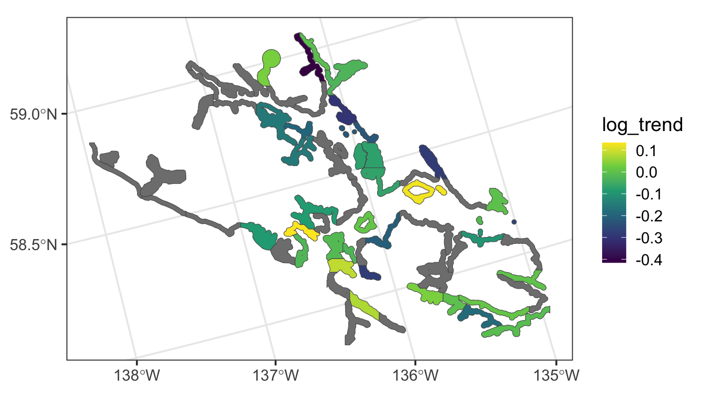

9 Areal Data
Throughout this section, we will use both the spmodel package and the ggplot2 package:
Goals:
- Use the
spautor()function inspmodelto fit a spatial linear model to areal data. - Connect parameter estimates in the summary output of
spautor()to the spatial linear model introduced in Equation 2.2 in Chapter 2. - Apply some of the other functions introduced in Chapter 3 to a model object fit with
spautor(). - Use the
spgautor()function inspmodelto fit a spatial generalized linear model to areal data.
9.1 Data Introduction
Throughout the section, we will use the seal data in the spmodel package. The seal data is an sf object with a POLYGON geometry. There are 62 polygons in the data, some of which have non-missing values of log_trend, which is the log of the estimated harbor-seal trends that were calculated from abundance data.
The following code generates a visualization of the seal data: polygons that are grey have a missing value for log_trend.
ggplot(seal, aes(fill = log_trend)) +
geom_sf() +
scale_fill_viridis_c() +
theme_bw(base_size = 14) 
Our goal is to fit a spatial autoregressive model (Equation 2.2 and Equation 2.4) to the log_trend response variable with the spautor() function. Then, we will use the fitted model to predict the log_trend for sites where log_trend is not recorded.
9.2 spautor() Syntax and Output Interpretation
The syntax for fitting a model to areal data with spautor() is very similar to that used for splm(). Again, there are generally at least three required arguments:
-
formula: a formula that describes the relationship between the response variable (\(\mathbf{y}\)) and explanatory variables (\(\mathbf{X}\)) -
data: adata.frameorsfobject that contains the response variable, explanatory variables, and spatial information. Note that ifdatais adata.frame, thenWis an additional required argument tospautor(). -
spcov_type: the spatial covariance type ("car"or"sar")
We can fit a conditional auto-regressive (CAR) model with
sealmod <- spautor(log_trend ~ 1, data = seal, spcov_type = "car")
summary(sealmod)
#>
#> Call:
#> spautor(formula = log_trend ~ 1, data = seal, spcov_type = "car")
#>
#> Residuals:
#> Min 1Q Median 3Q Max
#> -0.34441 -0.10403 0.04423 0.07351 0.20489
#>
#> Coefficients (fixed):
#> Estimate Std. Error z value Pr(>|z|)
#> (Intercept) -0.07103 0.02492 -2.851 0.00436 **
#> ---
#> Signif. codes: 0 '***' 0.001 '**' 0.01 '*' 0.05 '.' 0.1 ' ' 1
#>
#> Coefficients (car spatial covariance):
#> de range extra
#> 0.03226 0.42020 0.02235We can relate some of the components in the summary output to the model in Equation 2.2 and Equation 2.4:
- the value in the
Estimatecolumn of theCoefficients (fixed)table form \(\boldsymbol{\hat{\beta}}\), an estimate of \(\boldsymbol{\beta}\). - the
devalue of 0.032 in theCoefficients (car spatial covariance)table is \(\hat{\sigma}^2_{de}\), which is an estimate of \(\sigma^2_{de}\), the variance of \(\boldsymbol{\tau}\). - the
rangevalue of 0.42 in theCoefficients (car spatial covariance)table is \(\hat{\phi}\), an estimate of \(\phi\) in Equation 2.4.
By default, \(\sigma^2_{ie}\) is assumed to be 0 for autoregressive models and hence, ie is omitted from the summary output.
Though the weight matrix \(\mathbf{W}\) in Equation 2.4 used in the model does not appear in the summary output, we can pull the weight matrix from the sealmod object with
sealmod$WBy default, spautor() uses queen contiguity to form the weight matrix: observations are “neighbors” if they share at least one boundary (even if that boundary is a single point). Recall that observations are not considered neighbors with themselves. Also by default, spautor() row standardizes the weight matrix so that each of the rows in \(\mathbf{W}\) sum to \(1\). Row standardization of the weight matrix is performed by default because doing so results in “nice” properties of the resulting covariance matrix (Ver Hoef et al. 2018). The first row of the weight matrix is
sealmod$W[1, ]
#> [1] 0.0000000 0.3333333 0.0000000 0.0000000 0.0000000 0.0000000 0.0000000
#> [8] 0.0000000 0.0000000 0.0000000 0.0000000 0.0000000 0.0000000 0.0000000
#> [15] 0.0000000 0.3333333 0.0000000 0.0000000 0.0000000 0.0000000 0.0000000
#> [22] 0.0000000 0.0000000 0.0000000 0.0000000 0.0000000 0.0000000 0.3333333
#> [29] 0.0000000 0.0000000 0.0000000 0.0000000 0.0000000 0.0000000 0.0000000
#> [36] 0.0000000 0.0000000 0.0000000 0.0000000 0.0000000 0.0000000 0.0000000
#> [43] 0.0000000 0.0000000 0.0000000 0.0000000 0.0000000 0.0000000 0.0000000
#> [50] 0.0000000 0.0000000 0.0000000 0.0000000 0.0000000 0.0000000 0.0000000
#> [57] 0.0000000 0.0000000 0.0000000 0.0000000 0.0000000 0.0000000The output indicates that the first observation is neighbors with the second observation, the sixteenth observation, and the twenty-eighth observation.
Finally, if we re-examine \(\mathbf{W}\), we can note that some rows of \(\mathbf{W}\) do not have any positive values, indicating that some observations in the data have no neighbors. Looking back on the plot of the data, we see that there are indeed a few “island” sites that do not share a boundary with any other polygons. The errors for these spatial locations are assumed to be uncorrelated with all other random errors, and, they are given a unique variance parameter that is the extra spatial covariance estimate in the summary output of the model.
9.3 Additional Analysis
Most of the helper functions for models fit with splm() are also useful for models fit with spautor(). Additionally, most of the additional arguments for splm() are also additional arguments for spautor().
Of the functions mentioned in Chapter 3, the following are also available to use on a model fit with spautor():
-
augment(),glance(), andglances() - model fit statistics with
AIC(),AICc()andGR2() - model diagnostics statistics with
cooks.distance(),residuals(),fitted(), etc.
Of the arguments mentioned in Chapter 3, spcov_initial and random are available for spautor().
The anisotropy argument is not available for spautor() because the covariance for an autoregressive model is based on the neighborhood structure of the spatial locations, not on distance.
9.4 Prediction with Areal Data
Prediction of response values for unobserved polygons with areal data requires that the polygons with missing response values be included in the data argument supplied to spautor(). The reason for this requirement is that exclusion of these polygons changes the underlying neighborhood structure of the data, and, therefore changes the covariance matrix.
For areal data, we can obtain predictions for unobserved polygons using predict() on the fitted model object or augment() on the fitted model object, specifying the newdata argument to be mod$newdata. Both approaches are given below:
augment(sealmod, newdata = sealmod$newdata)
#> Simple feature collection with 28 features and 2 fields
#> Geometry type: POLYGON
#> Dimension: XY
#> Bounding box: xmin: 913618.8 ymin: 1007542 xmax: 1115097 ymax: 1132682
#> Projected CRS: NAD83 / Alaska Albers
#> # A tibble: 28 × 3
#> log_trend .fitted geometry
#> * <dbl> <dbl> <POLYGON [m]>
#> 1 NA -0.115 ((1035002 1054710, 1035002 1054542, 1035002 1053542, 10…
#> 2 NA -0.00918 ((1043093 1020553, 1043097 1020550, 1043101 1020550, 10…
#> 3 NA -0.0603 ((1099737 1054310, 1099752 1054262, 1099788 1054278, 10…
#> 4 NA -0.0360 ((1099002 1036542, 1099134 1036462, 1099139 1036431, 10…
#> 5 NA -0.0724 ((1076902 1053189, 1076912 1053179, 1076931 1053179, 10…
#> 6 NA -0.0549 ((1070501 1046969, 1070317 1046598, 1070308 1046542, 10…
#> # ℹ 22 more rowsThe mod$newdata syntax also works for models fit with splm(), where the data used contains missing values for the response variable at any unobserved locations.
9.5 Spatial Generalized Autoregressive Mdoels
In Chapter 7 we discussed how to formulate spatial generalized linear models using spglm(), building off the construction of spatial linear models fit using splm(). Similarly, we can formulate spatial generalized autoregressive models using spgautor(), building off the construction of spatial autoregressive models fit using spautor(). Spatial generalized autoregressive models can be fit to binomial, proportion, count, and skewed data by providing the family argument, as with the models fit using spglm() in Chapter 7. For example, we model exp(log_trend) (which is strictly positive) as a gamma random variable with the simultaneous autoregressive spatial covariance by running
sealgmod <- spgautor(exp(log_trend) ~ 1, family = Gamma,
data = seal, spcov_type = "sar")
summary(sealgmod)
#>
#> Call:
#> spgautor(formula = exp(log_trend) ~ 1, family = Gamma, data = seal,
#> spcov_type = "sar")
#>
#> Deviance Residuals:
#> Min 1Q Median 3Q Max
#> -0.32310 -0.09852 0.03765 0.07403 0.21513
#>
#> Coefficients (fixed):
#> Estimate Std. Error z value Pr(>|z|)
#> (Intercept) -0.07391 0.03022 -2.446 0.0145 *
#> ---
#> Signif. codes: 0 '***' 0.001 '**' 0.01 '*' 0.05 '.' 0.1 ' ' 1
#>
#> Coefficients (sar spatial covariance):
#> de range extra
#> 2.092e-06 5.935e-01 1.233e-02
#>
#> Coefficients (Dispersion for Gamma family):
#> dispersion
#> 68.229.6 R Code Appendix
library(spmodel)
library(ggplot2)
ggplot(seal, aes(fill = log_trend)) +
geom_sf() +
scale_fill_viridis_c() +
theme_bw(base_size = 14)
sealmod <- spautor(log_trend ~ 1, data = seal, spcov_type = "car")
summary(sealmod)
spcov_params_car <- coef(sealmod, type = "spcov")
de_car <- as.vector(round(spcov_params_car[["de"]], digits = 3))
range_car <- as.vector(round(spcov_params_car[["range"]], digits = 3))
sealmod$W
sealmod$W[1, ]
AIC(sealmod)
fitted(sealmod)
sealmod <- spautor(log_trend ~ 1, data = seal, spcov_type = "car")
summary(sealmod)
predict(sealmod)
augment(sealmod, newdata = sealmod$newdata)
is_missing <- is.na(seal$log_trend)
seal_nomiss <- seal[!is_missing, , ]
sealmod_nomiss <- spautor(log_trend ~ 1,
data = seal_nomiss, spcov_type = "car")
print(sealmod)
print(sealmod_nomiss)
sealgmod <- spgautor(exp(log_trend) ~ 1, family = Gamma,
data = seal, spcov_type = "sar")
summary(sealgmod)